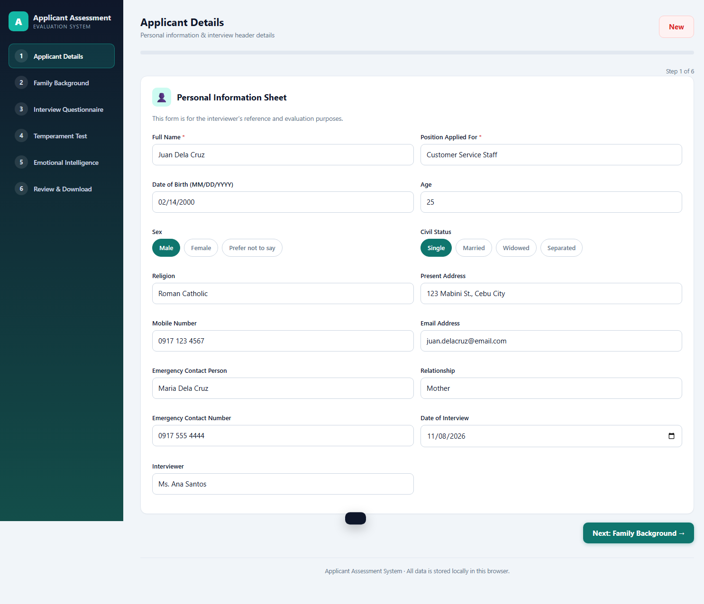
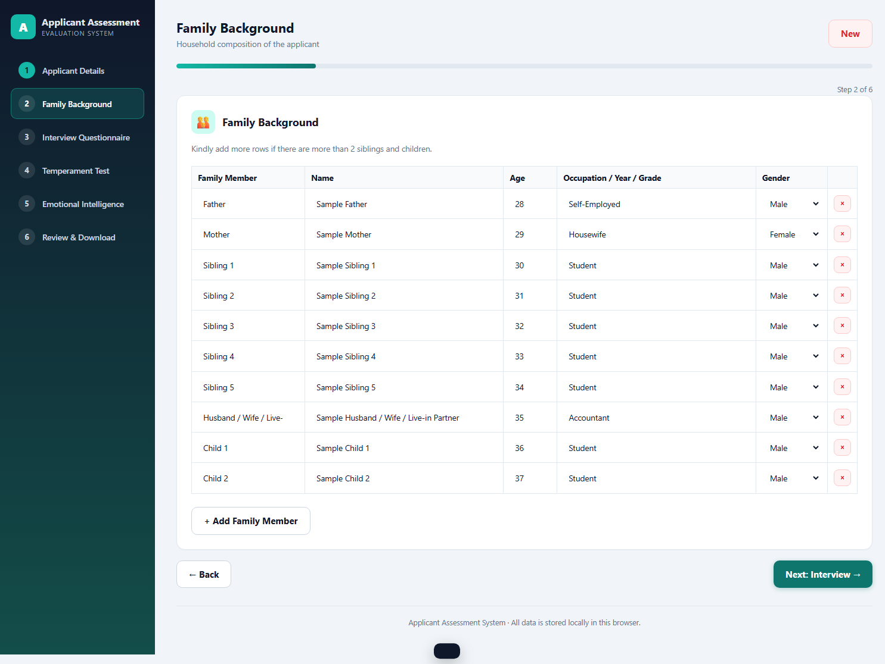
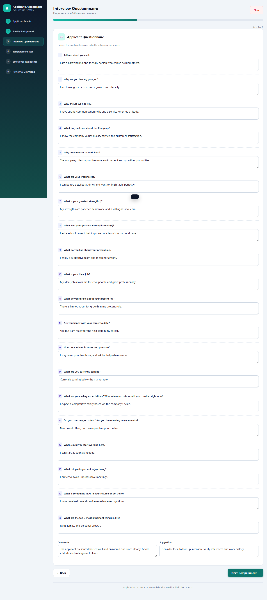
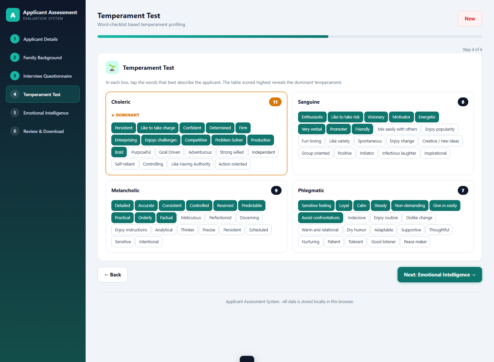
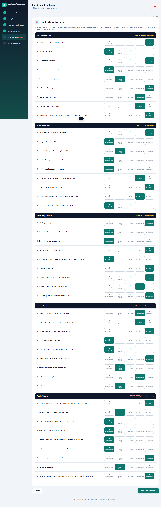
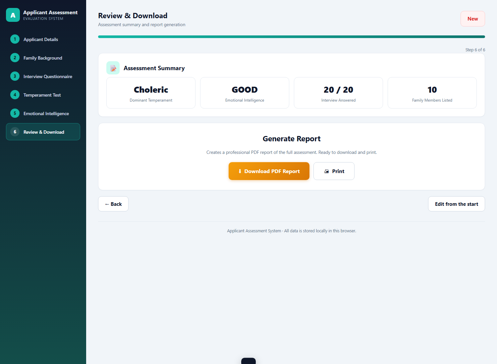
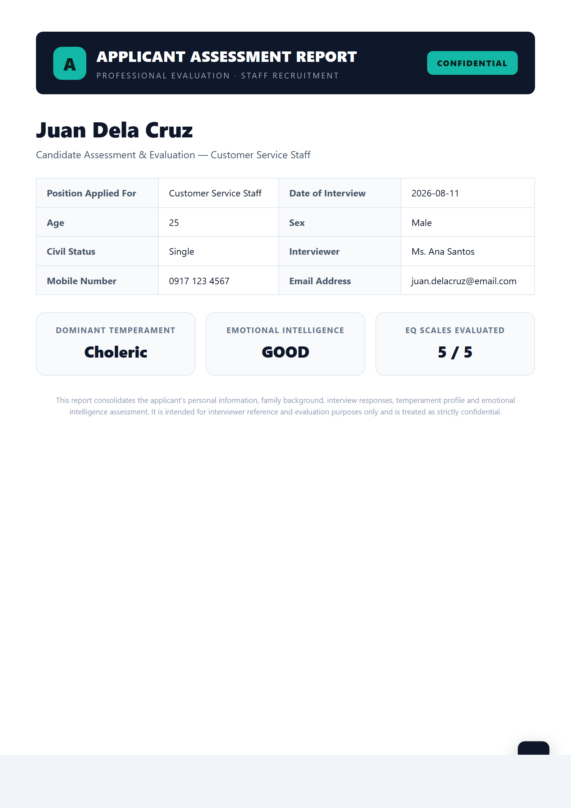

A step-by-step guide for interviewers and HR staff
Version: 1.0 Applies to: Applicant Assessment System v1.0 Date: August 2026 Prepared by: Human Resources Development
CONFIDENTIAL — Internal Use Only
Document Control
Revision history for this user manual.
Version
Date
Description
Author
1.0
August 2026
Initial user manual for the Applicant Assessment System.
HR Development
Table of Contents
1Introduction3
2System Requirements3
3Getting Started4
4Step 1 — Applicant Details5
5Step 2 — Family Background6
6Step 3 — Interview Questionnaire7
7Step 4 — Temperament Test8
8Step 5 — Emotional Intelligence Test9
9Step 6 — Review & Report Download10
10Managing Assessments12
11Troubleshooting & FAQ13
1Introduction
The Applicant Assessment System is a web application that replaces the paper-based staff applicant
evaluation process. It combines all assessment instruments into one guided, interactive workflow and
automatically generates a professional PDF report at the end.
The system covers five assessment instruments:
Instrument
What it captures
Personal Information Sheet
Basic personal, contact, and emergency details.
Family Background
Household members and their information.
Applicant Questionnaire
Answers to 20 structured interview questions.
Temperament Test
Descriptor words selected across four temperament types.
Emotional Intelligence Test
45 items across five EQ composite scales.
Who uses this manual: Interviewers, HR assistants, and any staff member who conducts or records applicant assessments.
2System Requirements
2.1 Hardware & Software
Requirement
Minimum
Computer
Desktop or laptop computer (works on tablets with a keyboard)
Operating System
Windows, macOS, or Linux
Browser
Current version of Google Chrome, Microsoft Edge, Mozilla Firefox, or Safari
Internet
Not required after the app has loaded once (libraries are bundled locally)
Printer (optional)
Any printer for printing the report
2.2 Getting the Application
Copy the entire application folder to the computer (e.g., USB drive, shared drive, or desktop).
Keep the folder structure intact — do not move index.html, css/, js/, or lib/ out of place.
Tip: Because all data is saved in the browser, the same computer should be used to continue a draft assessment.
3Getting Started
3.1 Opening the Application
Locate the file index.html in the application folder.
Double-click it to open in your default web browser.
The application loads immediately with the Applicant Details step shown.
3.2 The Interface
Sidebar (left): lists the six steps. Click any step to jump to it. Completed steps are highlighted.
Progress bar (top): shows how far you are through the assessment.
New button (top right): clears the current data and starts a fresh assessment.
Next / Back buttons: move between steps.

Figure 1. The main interface with the sidebar, progress bar, and Step 1 (Applicant Details).
4Step 1 — Applicant Details
Full Name and Position Applied For are required fields.
Enter the remaining personal details: date of birth, age, sex, civil status, religion, address, mobile number, and e-mail address.
For Sex and Civil Status, click the appropriate pill button.
Enter the Emergency Contact information.
Set the Date of Interview (defaults to today) and the Interviewer name.
Click Next: Family Background.
Tip: If you enter a date of birth in MM/DD/YYYY format and leave Age blank, the age is computed automatically.
Figure 2. Step 1 — Applicant Details.
5Step 2 — Family Background
A default table lists father, mother, siblings, spouse or live-in partner, and children.
Type each member’s name, age, occupation / year / grade, and select the gender.
Use + Add Family Member to insert extra rows for more than 2 siblings or children.
Remove unwanted rows with the × button.

Figure 3. Step 2 — Family Background table.
6Step 3 — Interview Questionnaire
Read each of the 20 questions aloud and type the applicant’s answer in the text box below it.
Record optional Comments and Suggestions for the HR review at the bottom of the page.
Questions may be left blank if the interviewer prefers; they will appear as “No answer recorded” in the report.

Figure 4. Step 3 — Applicant Questionnaire with comments and suggestions.
7Step 4 — Temperament Test
Four cards are shown: Choleric, Sanguine, Melancholic, and Phlegmatic, with 20 descriptor words each.
Click every word that best describes the applicant. Click again to deselect.
The count at the top of each card updates live.
The highest-scoring card is highlighted and labelled ★ DOMINANT.
Interpretation: Scores of 15–20 are Strong, 10–14 Moderate, 5–9 Mild, and 0–4 Minimal. Each person is a blend of all four types; the dominant type shows natural strengths and tendencies.

Figure 5. Step 4 — Temperament Test word checklist.
8Step 5 — Emotional Intelligence Test
Five composite scales are presented in order: Interpersonal Skills, Self-Actualization, Social Responsibility, Impulse Control, and Reality Testing.
For each of the 45 statements, select one response:
5 Strongly Disagree · 4 Somewhat Disagree · 3 No Opinion ·
2 Somewhat Agree · 1 Strongly Agree.
Click a selected response again to clear it.
Each scale’s header shows a live score and interpretation as items are answered.
Scoring bands (per scale, max 45): 0–15 EXCELLENT (Effectively Functioning) · 16–30 GOOD (Functioning) · 31–45 POOR (Needs Improvement). Lower totals mean stronger emotional functioning.

Figure 6. Step 5 — Emotional Intelligence Test (45 items across 5 scales).
9Step 6 — Review & Report Download
9.1 Reviewing the Summary
The summary shows the dominant temperament, the overall Emotional Intelligence rating, the number of
interview questions answered, and the number of family members listed. Warnings are displayed for any
incomplete sections — these do not block report generation.

Figure 7. Step 6 — Assessment summary and report actions.
9.2 Downloading the PDF Report
Click ⬇ Download PDF Report.
Wait while the system renders each A4 page (a progress indicator appears on the button).
The file “<Applicant Name> – Assessment Report.pdf” is saved to the browser’s download folder.
The report includes: cover summary, personal information, family background, the full interview transcript,
temperament results with a dominant-type callout, EQ scores per scale with ratings, the overall EQ rating,
and signature lines for the interviewer and HR.

Figure 8. First page of the generated PDF report.
10Managing Assessments
10.1 Auto-Save
All entries are saved automatically in the browser’s local storage as you type. If the page is
refreshed or the tab is closed accidentally, reopen index.html and the previous data is restored.
10.2 Starting a New Assessment
Click the New button at the top right.
Confirm when prompted. All stored data for the current assessment is permanently removed.
Important: Always download the PDF report before starting a new assessment, because the New action deletes the stored data.
10.3 Printing the Report
Click Print on the Review page (Step 6).
In the print dialog, choose the destination (printer or “Save as PDF”).
The report is printed in A4 portrait layout.
10.4 Moving Data to Another Computer
Data is stored per browser and per computer. To continue on another device, download the PDF report and
store it in the applicant’s personnel file; re-enter data on the new device if a draft must continue.
11Troubleshooting & FAQ
Question / Problem
Solution
The page does not open or shows a blank screen.
Open index.html with a supported browser (Chrome, Edge, Firefox, Safari). Make sure the lib/, css/, and js/ folders are alongside it.
The PDF does not download.
Check the browser’s download settings and pop-up blocker. Try the Print button and choose “Save as PDF” instead.
My progress is gone after reopening the app.
Data is stored in the browser that last used it. Reopen the app in the same browser and computer. Clear browser history/site data deletes saved assessments.
How do I view a sample assessment?
Append ?demo to the page URL (e.g., index.html?demo) to load a filled sample. Use ?demo&step=4 to jump directly to a step.
Can I leave some questions unanswered?
Yes. The report still generates; unanswered items are marked “Not completed” and warnings are shown on the Review page.
How are temperament and EQ scores computed?
Temperament counts selected words per type (highest = dominant). EQ sums each scale’s 9 responses (1–5) and maps them to the EXCELLENT / GOOD / POOR bands.
Is an internet connection required?
No. All scripts are bundled locally. Load the page once with any browser, and it works offline afterward.
Still having trouble? Contact the HR Development team with a description of the problem, the browser used, and a screenshot of any error message.